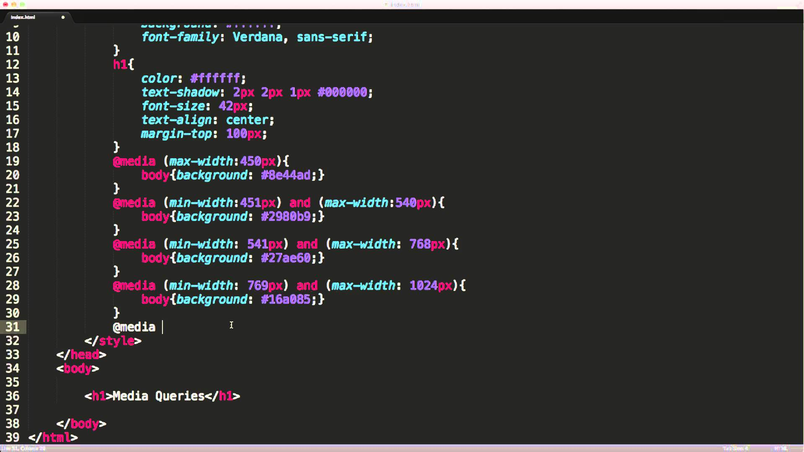

O Design Responsivo usa Media Queries, que em uma tradução livre é consulta de mídia. São expressões que direcionam o visitante do seu site para uma folha de estilos diferente de acordo com o dispositivo que ele estiver utilizando. Ainda é difícil encontrar artigos em português que expliquem tão bem o passo-a-passo de como fazer um Design Responsivo, mas indicamos esses três artigos do blog da PopUp Design.
Fonte: PrinciWeb
